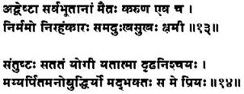

Sanskrit remains a beautiful and useful language in contemporary society.
When we speak of language, the first question that comes to mind is, what is meant by "language"?
Language is a complex system based on sounds, symbols, gestures and grammar that humans use to communicate thoughts, feelings and abstract concepts.
There are approximately over 6,000 languages in the world. A language either can be spoken or written. Most of the old native languages were only spoken ones. People in some remote parts of the world still use these to pass information from one generation to the next.
The spoken or oral languages are more spontaneous and are made up from a limited set of vowels and consonants, and often tone. They are simpler in structure and form as compared to written languages.
A written language incorporates written symbols in addition to the corresponding sounds in a spoken language. If one listens closely, they will observe that a spoken language is much simpler and consists of broken sentences, as compared to its written form. Written languages also help to visualize, sustain, and communicate abstract thoughts coherently and, therefore, are more complex than spoken only languages.
Another inherent nature of languages is they always change over time. Words, meanings, word orders, sounds, grammar and slang in a language are always changing as they interact with other languages.

The first language in the world became 6,000 languages because the processes of language change can take place in many directions. This change is happening more rapidly in today's world as travel and communication across the globe have become much easier.
Just as extinction is part of the natural history of life forms, it is also common in life cycles of languages. Throughout human history, languages have died because of invasions and migrations.
But today, there is an extinction crisis among languages at a vastly accelerated rate. It is speculated that 90% of languages in the world will become extinct by the year 2100, as explained by Professor John McWhorter in series of lectures called "The Story of Human Language."
The languages of the world tend to mix together on various levels. Today, the most widely-used language on an international level is English. All languages borrow words and grammar from one another; there is no "pure" vocabulary anymore. But some borrow so much vocabulary that there is little original material left, such as in English.
Basic language being a conglomeration of symbols, sounds, tones and gestures is not what it represents or communicates. Hence, there is always room for misunderstanding unless one is able to convey and interpret not only the simple words that are spoken, but also the hidden tones and gestures.
So the issue is: Are languages that are available to us today conducive to peaceful communication, especially as societies and human relations become more complex? Moreover, is English doing this job of peaceful communication without creating misunderstandings? Are there any other languages whose basic structure would be more suitable to such communication?